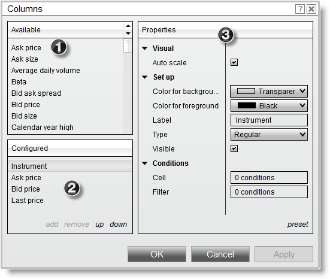
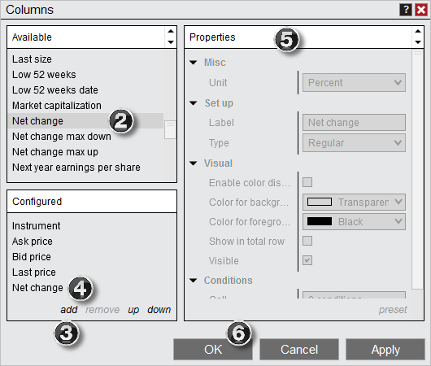
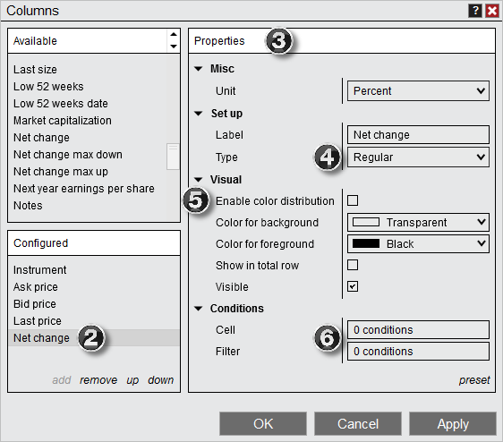
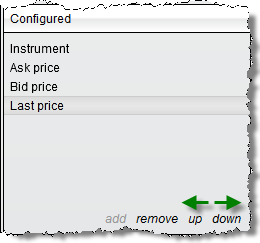
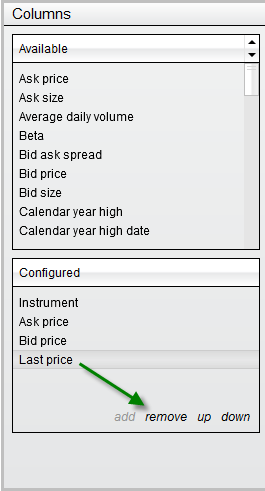

|
<< Click to Display Table of Contents >> Working with Columns |


|
Working with Columns
|
<< Click to Display Table of Contents >> Working with Columns |
|
The Market Analyzer allows you to add a variety of columns ranging from indicators to position information. To add, remove, and customize columns in your Market Analyzer window please review the information below.
 Understanding the Columns window
Understanding the Columns window
The Columns window is used to add, remove, and edit columns within the Market Analyzer window.
Accessing the Columns WindowTo access the Columns window press down on your right mouse button in the Market Analyzer window and select the menu item Columns...
Sections of the Columns WindowThe image below displays the four sections of the Columns window.
1.List of available columns 2.Current columns applied to the Market Analyzer 3.Selected column's parameters
 |
A wide variety of columns can be added to your Market Analyzer window allowing you to see indicator, position, or price information at a glance.
Adding columns to the Market Analyzer windowTo add a column to the Market Analyzer window:
1.Open the Columns window (see the "Understanding the Columns window" section above) 2.Select the column you want to add from the list of available columns 3.Press the Add button or simply double click on the column you want to add 4.The column will now be visible in the list of applied columns 5.The column's parameters will be editable on the right side of the Columns window when the column is selected from the applied columns list (see the "How to customize columns" section below) 6.Press the OK button to apply the column(s) to your Market Analyzer, and exit the Columns window

Adding an Indicator ColumnTo add an indicator column to the Market Analyzer window:
1.Open the Columns window (see the "Understanding the Columns window" section above) 2.Left mouse click on the Indicator column and press the Add button or simply double click on it 3.The column will now be visible in the list of applied columns and listed as "ADL on 1 Min data" 4.You can now select the indicator of your choice from the Indicator parameter |
Once you have added columns to your Market Analyzer window (see the "How to add columns" section above) you can customize the column by editing the column's parameters.
Editing a Column's ParametersYou can customize any column from the Columns window.
1.Open the Columns window (see the "Understanding the Columns window" section above) 2.Highlight the column you would like to edit in the list of Configured columns (as shown by the image below). 3.Once highlighted this column's parameters will be editable on the right hand side 4.You can choose to display the column Type as Regular or as a BarGraph 5.You can configure the color settings, including checking Enable color distribution to apply a range of colors based on their values 6.You can set Cell or Filter conditions for any column from the Conditions parameters section

Changing the Order and Width of ColumnsTo order columns in the Market Analyzer window you can use "up" or "down" in the Configured columns section.

•Left mouse click "up" to move the selected applied column left in the Market Analyzer window •Left mouse click "down" to move the selected applied column right in the Market Analyzer window Please see the Data Grids section of the user help guide for information on sizing and ordering columns.
Understanding Indicator Column PropertiesAn Indicator column has many unique properties used to determine how the indicator is calculated. It is important to understand how these properties will impact the resulting indicator value displayed in your Market Analyzer column.
Saving a Customized Column PresetsOnce you have an individual column properties set to your preference, you can left mouse click on the "preset" text located in the bottom right of the properties dialog. Selecting the option "save" will save these settings as the default settings used every time you apply a new column.
If you change your settings and later wish to go back to the original settings, you can left mouse click on the "preset" text and select the option to "restore" to return to the original settings. |
Columns can be removed from the Columns window or from the Market Analyzer directly.
Removing Columns from the Market Analyzer WindowThere are two ways to remove a column:
1.From the Market Analyzer window left mouse click on the column header and hold down the left mouse button to drag the column outside the Market Analyzer window, once the cursor changes to a black X release the left mouse button to remove the column. 2.Open the Columns window (see the "Understanding the Columns window" section above). Highlight the column you would like to remove in the list of Configured columns (as shown in the image below) then press the Remove button.
 |
See the Dynamic Ranking and Sorting section of the user help guide for information on sorting and raking your Market Analyzer columns. |